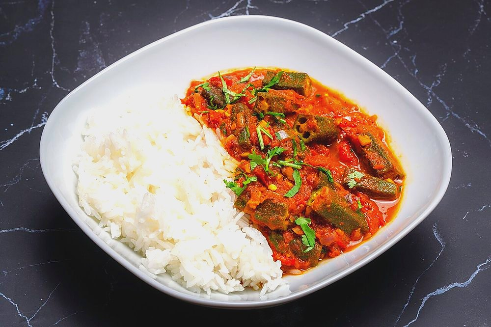

Bhindi Masala
sliced okra fried dry until it loses all its slime, then tossed with onion and amchur

Allergens: none of the ten listed below
Checked against the ingredient list for milk, egg, fish, crustaceans, tree nuts, peanuts, sesame, mustard, soy and gluten. Nothing else is checked, and brands vary, so read the label on anything you have not bought before.
Ingredients
Quantities for 4.
- 600g, wiped clean and cut into 2cm lengths Okra
- 2 medium (240g), sliced lengthwise Onion
- 2 medium (200g), cut into wedges Tomato
- 1 inch, grated Ginger
- 4 cloves, minced Garlic
- 2, slit Green Chilli
- 5 tbsp Neutral Oil
- 1 tsp Cumin Seeds
- 1/2 tsp, crushed Fennel Seedsoptional
- 1/2 tsp Turmeric
- 2 tsp Coriander Powder
- 3/4 tsp Chilli Powder
- 1 tsp Amchur
- 1/2 tsp Garam Masala
- to taste Salt
- 2 tbsp, chopped Coriander Leavesoptional
Cookware
stovetop, kadhai
Before you start
- Wash the okra whole an hour ahead and dry every pod with a cloth. Any water on the knife or the pod is what makes it slimy.
- Trim the caps and tips and slice only once the pods are bone dry.
- Do not add salt until the okra has finished frying. Salt draws out moisture and brings the slime straight back.
Method
- Heat 4 tbsp of the oil in a wide kadhai until it shimmers.
- Add the okra in a single layer and fry on medium-high for 10 minutes, stirring only every 2 or 3 minutes.Constant stirring is what makes okra go ropy. Leave it alone and let it sear.
- Keep frying until the pieces are browned in patches and no thread follows the spoon, about 4 minutes more.Lift a piece with the spoon. If nothing strings behind it, you are done.
- Lift the okra out onto a plate and set aside.
- Add the last tablespoon of oil to the pan and crackle the cumin and crushed fennel for 20 seconds.
- Add the onion and fry 7 minutes on medium-high until soft with brown edges.
- Stir in the ginger, garlic and green chillies and fry 90 seconds.
- Add the turmeric, coriander powder and chilli powder, stir 20 seconds, then add the tomato wedges and 1 tsp salt.
- Cook 5 minutes, just until the tomato softens but still holds its shape.
- Return the okra, fold everything together gently, and cook 3 minutes uncovered.Fold, do not stir hard, or the okra breaks up.
- Stir in the amchur and garam masala, scatter the coriander, and serve immediately.
Storage
Keeps 2 days refrigerated. Reheat in a dry pan on high; a microwave brings the sliminess back. Do not freeze.
Nutrition Good estimate
| Per serving295 g | Per 100 g | |
|---|---|---|
| Calories | 257+ kcal | 87+ kcal |
| Protein | 5.0+ g | 2+ g |
| Carbohydrate | 23.2+ g | 8+ g |
| of which sugars | 7.2+ g | 2+ g |
| Fibre | 7.8+ g | 3+ g |
| Fat | 18.2+ g | 6+ g |
| of which saturated | 1.9+ g | 1+ g |
| of which unsaturated | 15.2+ g | 5+ g |
The + means ingredients given to taste rather than by weight are counted as zero, so the true figure is a little higher than shown. Worked out from the listed quantities; most of the ingredient list could be weighed. Ingredients given to taste rather than by weight are counted as zero, so the real figure is a little higher than this. The + says so. Some ingredients have no exact match in the nutrient database and use the nearest equivalent: amchur, garam masala. Estimated from raw ingredients using USDA FoodData Central. Cooking changes are not modelled, and added salt is excluded, so sodium is not given.
Written and checked against sources, not cooked in a test kitchen. Times, yields and keeping times are guides, and the allergen and nutrition figures are worked out from the ingredient list rather than measured. Use your own judgement, particularly on doneness and on anything you are storing or reheating. More in About.